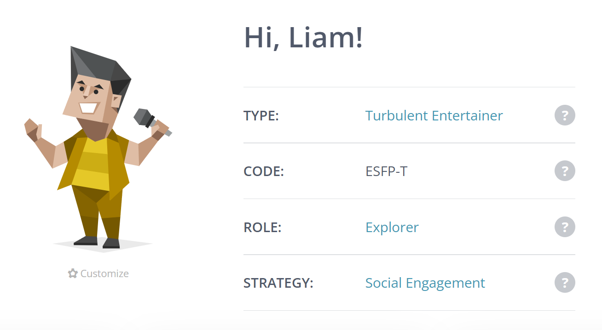
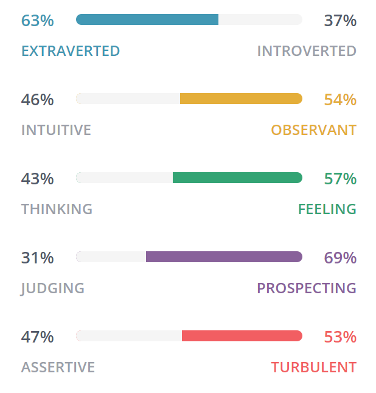
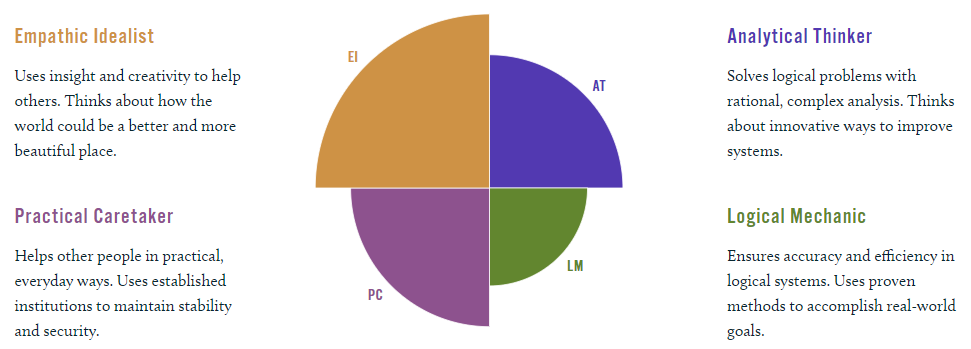
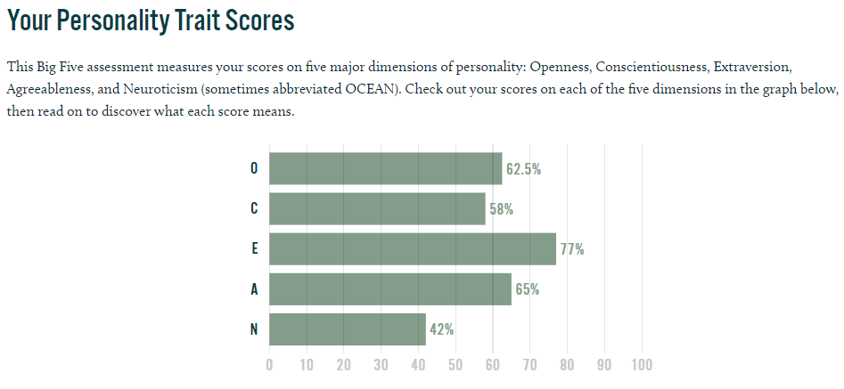

<!DOCTYPE html>
<html lang="en" dir="ltr">
  <head>

    <meta charset="utf-8">

    <title>Liam's Assignment 1 - Personal Information</title>

    <link rel="stylesheet" href="style.css">

    <script src="https://kit.fontawesome.com/87bc27a747.js" crossorigin="anonymous"></script>

    <style>
img {
  display: block;
  margin-left: auto;
  margin-right: auto;
}
</style>

  </head>

  <style>
body {
margin: 0;
font-size: 28px;
font-family: Tahoma, Helvetica, sans-serif;
}

.header {
background-color: #f1f1f1;
padding: 30px;
text-align: center;
}

#navbar {
overflow: hidden;
background-color: #555;
box-shadow: 0 4px 8px 0 rgba(0, 0, 0, 0.2), 0 6px 20px 0 rgba(0, 0, 0, 0.19);
}

#navbar a {
float: left;
display: block;
color: #f2f2f2;
text-align: center;
padding: 14px 16px;
text-decoration: none;
font-size: 17px;
}

#navbar a:hover {
background-color: #6e0303;
color: white;
}

#navbar a.active {
background-color: #aa0404;
color: white;
}

.content {
padding: 16px;
}

.sticky {
position: fixed;
top: 0;
width: 100%;
}

.sticky + .content {
padding-top: 60px;
}
</style>
<body>

<div class="header">
<h1 style="color: tomato;">About Me</h1>
<p style="color: black;">Course: COSC1078 <br> Name: Liam Thomas Bentley <br> Student ID: s3928558</p>
</div>

<div id="navbar">
<a href="index.html">Home <i class="fa fa-house"></i></a>
<a class="active" href="persinfo.html">About Me <i class="fa fa-user"></i></a>
<a href="it.html">Interest in IT <i class="fa fa-desktop"></i></a>
<a href="job.html">Ideal Job <i class="fa fa-briefcase"></i></a>
<a href="project.html">Project <i class="fa-solid fa-lightbulb"></i></a>
</div>

<script>
window.onscroll = function() {myFunction()};

var navbar = document.getElementById("navbar");
var sticky = navbar.offsetTop;

function myFunction() {
  if (window.pageYOffset >= sticky) {
    navbar.classList.add("sticky")
  } else {
    navbar.classList.remove("sticky");
  }
}
</script>

  <body>

  <h3>16 Personalities Test Results</h3>

  
  

  <h3>Learning Style Test Results</h3>

  <p>Your scores:</p>

<div style="text-align: center; font-family: Tahoma, Helvetica, sans-serif; color: white">
    <div style="display: inline-block; text-align: left;">
        •	Auditory: 30%<br />
        •	Visual: 20%<br />
        •	Tactile: 50%<br />
    </div>
</div>

<p>Tactile
If you are a tactile learner, you learn by touching and doing. You understand and remember things through physical movement. You are a "hands-on" learner who prefers to touch, move, build, or draw what you learn, and you tend to learn better when some type of physical activity is involved.
You need to be active and take frequent breaks, you often speak with your hands and with gestures, and you may have difficulty sitting still.</p>

<p>As a tactile learner, you like to take things apart and put things together, and you tend to find reasons to tinker or move around when you become bored.
You may be very well coordinated and have good athletic ability. You can easily remember things that were done but may have difficulty remembering what you saw or heard in the process.
You often communicate by touching, and you appreciate physically expressed forms of encouragement, such as a pat on the back.
</p>

  <h3>Big Five Personality Test Results</h3>

  
  

  <h3>What do the results of these tests mean for you?</h3>

  <p>Each of my tests indicate that I am an extroverted personality type that learns by doing, rather than listening or
watching. I am classed as a “Tactile Learner” and prefer practical scenarios to theory heavy learning, meaning I
learn best through hands on practice. My Myers-Briggs test indicated that I am a “Turbulent Entertainer” (ESFPT), meaning I am in my element when socialising and entertaining others. My Big Five Personality test showed that
I am an Empathic Idealist, indicating that I am sensitive to others’ emotions and am considerate of other people in
group settings as well as being an extremely open to new ideas.
</p>

<h3>How do you think these results may influence your behaviour in a team?</h3>

<p>The results of my tests indicate that while I am an emotionally driven person, I am at my most comfortable in group
settings when interacting with other people.In the context of a team environment, I often seek to act as a leader
and delegate people into roles to promote group efficiency and coordination as well as to provide emotional support
and to collate the ideas of other members. An area of improvement, as indicated by my results would be my
organisation and preparation skills as I am a turbulent and spontaneous personality type that prefers to not plan
every exact detail.
</p>

<h3>How should you take this into account when forming a team?</h3>

<p>When it comes to forming a team, I will be seeking members with a range of ideas that differ from my own, but that
are able to provide meaningful contributions to the project through dialogue. I would also ideally have one or
multiple team members that can provide a meaningful plan and timeline for the team and set milestones, as my
personal flaw is my lack of organisational ability despite my tendency to act as an emotional leader. My personal
role would be to stimulate collaboration among other members as well as to provide emotional support and to
prompt discussions.</p>

  </body>
</html>
